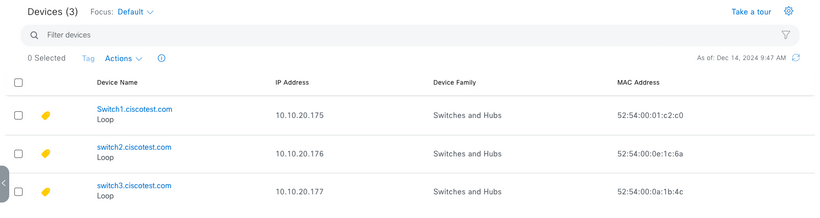
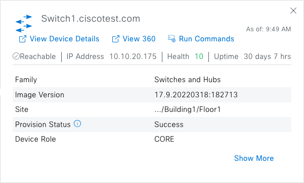
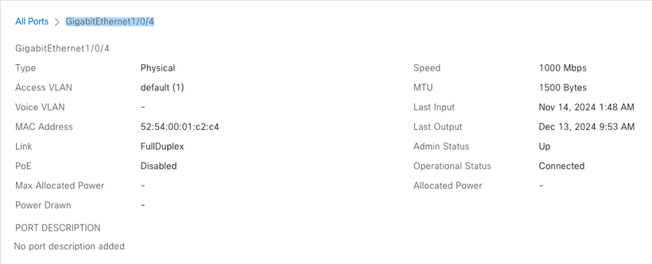
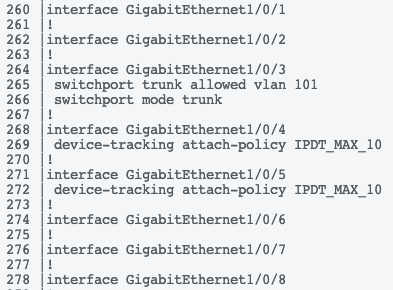

Automating configuration compliance verification for Cisco Switches¶

This article stems from a colleague's request to automate the configuration compliance checks of hundreds of switches spread across the globe.
Introduction¶
Ensuring configuration compliance is essential for:
- Verifying that the devices meet the expected configurations.
- Detecting unauthorized changes (out-of-process modifications).
- Measuring the compliance level.
In this guide, we outline an integration that uses templates to check the configuration of the devices and generates reports with:
- A list of the reviewed ports, showing their compliance status.
- A summary of the number of compliant and non-compliant ports per device.
We focus on readability rather than on advanced code optimization.
Using Catalyst Center¶
Our scenario assumes that all the devices are managed via Cisco Catalyst Center (formerly Cisco DNA Center). If you do not have a local instance, you can use the sandbox environment available at sandboxdnac2.cisco.com with these credentials:
- User:
devnetuser. - Password:
Cisco123!.
If we navigate to Provision → Inventory, we get a list of the managed devices:

Clicking on a device opens a small popup that gives access to its detail page:

By going to Interfaces → Ethernet Ports → GigabitEthernet1/0/4, we can view the details of the interface:

The window displays some information, but it is rather limited.
Next, let's navigate to Configuration to check the configuration of the interface:

From this, we can draw some initial conclusions:
- Catalyst Center contains the configurations (
running-config) of all our devices. - Catalyst Center provides high-level information about the configuration of the interfaces, but the details (e.g., STP, Port Security, QoS) are accessible only by examining the
running-config.
This situation arises because we still rely heavily on the CLI to manage switches. These devices are CLI-first: orchestrators like Catalyst Center tend to provide a limited view and leave the CLI as the primary tool to access detailed information.
With this in mind, we can refine our approach: we read the running-config of each switch and verify that each interface is configured correctly.
We could use show commands, but I advise against it because:
- There is no guarantee that
showcommands exist to display clearly whether a specific configuration is present. - Our goal is to verify the configuration, not the operational state of the interfaces.
- By working with the
running-config, we can verify all the interface configurations with a single, unified method.
Choosing an Approach: SSH, APIs or SDK¶
When we work via CLI, we have several options:
- Connect to each device using SSH.
- Retrieve the
running-configvia the Catalyst Center APIs. - Retrieve the
running-configvia the Catalyst Center SDK.
SSH requires downloading the running-config and storing it locally. We can do this, for example, with Netmiko or Ansible. We have already covered this approach in previous articles, so we do not discuss it here. If you choose this path, make sure you obtain the running-config of all the devices locally.
The Catalyst Center APIs are well documented. There is also a Python SDK, though its documentation is somewhat sparse.
When an SDK is available, I prefer to try it first and see whether it suits my needs. The advantage of an SDK is that it should handle challenges such as rate limiting (HTTP 429 errors) and pagination. However, I found that this SDK has some limitations that matter to me, such as the inability to work through a proxy server.
Whatever approach we choose, we need to obtain:
- A list of devices with details such as hostname, site and operating system.
- The
running-configof each device. - A list of the interfaces of each device.
Trial and Error¶
It is rare for documentation to be so thorough that it clearly identifies which APIs or methods are needed to achieve a specific goal. At this stage, we need to explore which APIs or methods can help us retrieve the required data.
Let's start with the SDK and connect to Catalyst Center:
from dnacentersdk import api
api_version = "2.3.7.6"
dnac = api.DNACenterAPI(
base_url=config["dnac_url"],
username=config["dnac_username"],
password=config["dnac_password"],
verify=config["verify_cert"],
version=api_version,
)
We store the configuration parameters in the config.yml file.
With the dir function, we can search for potentially useful functions. For example, dir(dnac) shows that devices exists, and dir(dnac.devices) reveals the functions dnac.devices.devices(), dnac.devices.get_device_by_id() and dnac.devices.get_device_config_by_id().
The dnac.devices.devices() function provides a list of all the devices, including:
- Device ID.
- Device family.
A careful reading of the output shows that it also contains information about the health of the device.
The dnac.devices.get_device_by_id() function returns the following for a specific device:
- OS type.
- OS version.
- Serial number.
Finally, the dnac.devices.get_device_config_by_id() function retrieves the running-config of a specific device.
Let's now see how to work directly with the APIs. First, we log in and retrieve the token required for the subsequent requests:
import requests
url = f"{config['dnac_url']}/dna/system/api/v1/auth/token"
response = requests.post(
url,
auth=(config['dnac_username'], config['dnac_password']),
verify=config['verify_cert']
)
token = response.json()["Token"]
As before, we can now search for the necessary APIs. We find a direct correspondence between the SDK and the APIs:
dnac.devices.devices()→/dna/intent/api/v1/device-health.dnac.devices.device_list()→/dna/intent/api/v1/network-device.dnac.devices.get_device_by_id()→/dna/intent/api/v1/network-device/{id}.dnac.devices.get_device_config_by_id()→/dna/intent/api/v1/network-device/{id}/config.
Our procedure now involves the following steps:
- Retrieve the list of all the devices (device list).
- For each device, fetch its
running-config.
Parsing¶
At this stage, we have a data structure containing a list of devices with some details and their running-config. The next step is to transform the running-config into a structured list of interfaces and attributes.
As we have seen, several parsers are available, but the best suited for this task is TTP (Template Text Parser). TTP is an ideal tool to parse a running-config and convert it into structured data.
<group name="interfaces" default="default_values">
interface {{ interface }}
description {{ description | re(".*") }}
switchport mode {{ swport_mode }}
switchport access vlan {{ access_vlan | to_int}}
switchport voice vlan {{ voice_vlan | to_int}}
switchport nonegotiate {{ swport_negotiate | set(False) }}
device-tracking attach-policy {{ tracking_policy }}
load-interval {{ load_interval | to_int }}
spanning-tree portfast {{ stp_portfast | set(True) }}
spanning-tree guard root {{ stp_guardroot | set(True) }}
shutdown {{ disabled | set(True) }}
! {{ _end_ }}
</group>
This template lets us:
- Parse text by identifying
interfaceblocks. - Extract the configuration details within each block, assigning values to the corresponding parameters.
- Ignore any configuration not explicitly defined in the template.
In the example, some parameters take their values directly from the configuration (e.g., access_vlan), while others are set to True or False depending on the presence of specific configurations (e.g., swport_negotiate and shutdown).
To make sure parameters are always initialized, even when a configuration is missing, we define a default value for each parameter:
<vars>
default_values = {
"description": None,
"swport_mode": None,
"access_vlan": None,
"voice_vlan": None,
"swport_negotiate": True,
"tracking_policy": None,
"load_interval": None,
"stp_portfast": False,
"stp_guardroot": False,
"disabled": False
}
</vars>
The following code applies the TTP template to each interface and saves the resulting structured data:
with open("interface.ttp", "r") as fh:
ttp_template = fh.read()
for hostname, details in device_details.items():
parser = ttp(
data=device_details[hostname]["running_config"],
template=ttp_template
)
parser.parse()
device_details[hostname]["interface_config"] = parser.result()[0][0]["interfaces"]
Profiles¶
Our task is to verify each interface against a defined profile. We can represent the profile either as a data structure or as an example configuration.
Since network engineers will use this compliance verification system, I opted to reduce complexity by representing the profiles as if they were interface configurations.
ignore_value:
- description
profiles:
- name: ProfileAccess
interface_regex: .*:.*Ethernet.*
interface_template: |2
interface GigabitEthernet0/1
description Access Interface
device-tracking attach-policy IPDT_MAX_10
- name: ProfileUplink
interface_regex: .*:.*Ethernet.*
interface_template: |2
interface GigabitEthernet0/1
description Trunk Interface
switchport trunk allowed vlan 101
switchport mode trunk
The example above shows two profiles. Each profile includes a name, a regular expression that specifies which interfaces the profile applies to, and a configuration template.
Our program must use TTP on both the profile and the interfaces to check, and compare their values.
In some cases, certain parameters must be specified but their actual value is not important (e.g., the interface description). The ignore_value list lets us specify the parameters with this characteristic.
The following code applies the same TTP template used earlier to each profile and saves the resulting structured data:
# Getting templates
for profile in config["profiles"]:
# Get template config (use template against interface profile)
template_parser = ttp(data=profile["interface_template"], template=ttp_template)
template_parser.parse()
template_config = template_parser.result()[0][0]["interfaces"]
# Save template
profiles[profile["name"]] = template_config
Compliance¶
Now we iterate over all the interfaces, apply the first matching profile and verify compliance. Since each interface might have multiple associated profiles, we choose to:
- Use, in order, the first profile whose regular expression matches the
hostname:interfacecombination. - In any case, stop the verification at the first matching profile.
The following code searches for the corresponding profile for each interface. Once the profile is found, the compare_interface function verifies it. In all cases, the result of the compliance check is recorded and we move on to the next interface.
for hostname, details in device_details.items():
# For each device
for interface in details["interface_config"]:
# For each interface
full_interface_name = f"{hostname}:{interface['interface']}"
# Find template
profile_name = None
is_compliant = False
for profile in config["profiles"]:
if re.match(f"^{profile['interface_regex']}$", full_interface_name):
# Profile match, update counter
total_interfaces = total_interfaces + 1
# Test interface compliance
is_compliant = compare_interface(
profiles[profile["name"]], interface, ignore_value=config["ignore_value"]
)
if is_compliant:
# Interface is compliant, update counter
compliant_interfaces = compliant_interfaces + 1
# Profile checked, proceed with next interface
break
The function that compares two interfaces simply checks the existence of the parameters and their values, ignoring any parameter that does not require a detailed verification:
def compare_interface(template, interface, ignore_value=None):
if not ignore_value:
# Set default
ignore_value = []
for key, value in template.items():
if key not in interface:
# template config does not exist in interface
return False
if key in ignore_value and interface[key] is not None:
# template config value exists, value is ignored
continue
if interface[key] is False and value is not False:
# template requires False
return False
if interface[key] is True and value is not True:
# template requires True
return False
if interface[key] != value:
# template config value differs from interface
return False
return True
Reporting¶
The final step is to create a report. In a real case, this phase depends on the process we want to build. For example, we could create a non-compliance ticket for each interface or, as in this case, a report in XLSX format.
The interfaces array in our script contains all the verified interfaces. The first four fields represent:
- The device.
- The interface.
- The associated profile.
- The result of the compliance check.
We then use the openpyxl library to create an XLSX file that contains the already structured data:
wb = openpyxl.Workbook()
summary_ws = wb.active
summary_ws.title = "Summary"
interface_ws = wb.create_sheet("Interfaces")
profile_ws = wb.create_sheet("Profiles")
# Add headers
interface_ws.append(xlsx_headers)
profile_ws.append(xlsx_headers)
summary_ws.append(summary_headers)
# Add data
for line in summary:
summary_ws.append(line)
for interface in interfaces:
interface_ws.append(interface)
for name, profile in profiles.items():
profile["profile"] = name
profile_ws.append(
profile.get(key) for key in xlsx_headers
)
# Add filters
interface_ws.auto_filter.ref = interface_ws.dimensions
profile_ws.auto_filter.ref = profile_ws.dimensions
summary_ws.auto_filter.ref = summary_ws.dimensions
# Auto size
for ws in [summary_ws, interface_ws, profile_ws]:
for column_cells in ws.columns:
length = max(len(str(cell.value)) for cell in column_cells)
ws.column_dimensions[column_cells[0].column_letter].width = length
# Save XLSX
wb.save("export.xlsx")
We add a summary sheet at the beginning, which shows the compliance level per device and the total. Both values are calculated from the interface list.
for interface in interfaces:
device = interface[0]
if not current_device:
# Initial set
current_device = device
has_profile = True if interface[2] else False
is_compliant = interface[3]
if current_device and device != current_device:
# Add to summary and reset counters
summary.append([
"device",
current_device,
int(device_compliant_interfaces / device_total_interfaces * 100) if device_total_interfaces > 0 else "NA",
device_compliant_interfaces,
device_total_interfaces,
])
current_device = device
device_total_interfaces = 0
device_compliant_interfaces = 0
if has_profile:
overall_total_interfaces = overall_total_interfaces + 1
device_total_interfaces = device_total_interfaces + 1
if is_compliant:
overall_compliant_interfaces = overall_compliant_interfaces + 1
device_compliant_interfaces = device_compliant_interfaces + 1
The scripts are available in my GitHub repository.